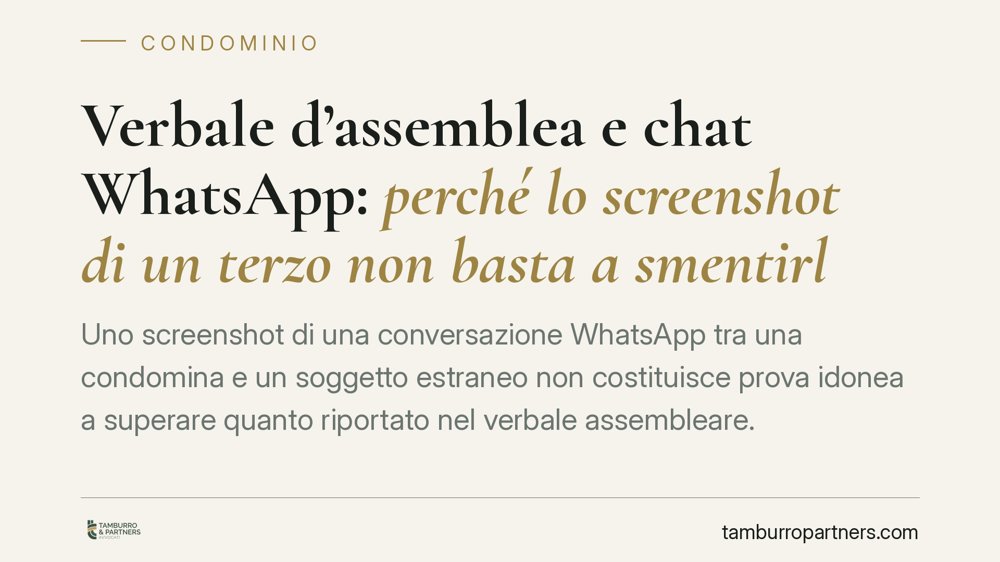

Verbale d'assemblea e chat WhatsApp: perché lo screenshot di un terzo non basta a smentirlo
Uno screenshot di una conversazione WhatsApp tra una condomina e un soggetto estraneo non costituisce prova idonea a superare quanto riportato nel verbale assembleare. La Corte d'Appello di Brescia lo ha ribadito, con argomenti utili a chiarire due nodi ricorrenti: il valore probatorio del verbale e le regole sul disconoscimento dei documenti informatici.

Il caso
Una condòmina impugna una delibera assembleare e, per dimostrare che il verbale non rispecchierebbe l'andamento reale della riunione, produce in giudizio lo screenshot di una chat WhatsApp intercorsa tra un'altra partecipante e un terzo.
La Corte d'Appello di Brescia respinge l'argomento. Il messaggio scambiato tra una condòmina e un soggetto estraneo al condominio non è una scrittura privata riferibile all'ente di gestione, non deve essere disconosciuto dall'amministratore e non è idoneo a scalfire il contenuto del verbale redatto in assemblea.
*Nota editoriale: i dati identificativi della pronuncia richiamati dalla fonte non risultano al momento verificabili in modo puntuale. Il principio di diritto esposto è, tuttavia, coerente con l'orientamento consolidato sui temi trattati e viene commentato in quanto tale.*
Inquadramento normativo
Il primo punto riguarda il valore del verbale. Il verbale d'assemblea condominiale non è atto pubblico e non gode della fede privilegiata riservata dall'art. 2700 c.c. agli atti formati da un pubblico ufficiale. Il verbale assistito da presidente e segretario fa sorgere una presunzione semplice di veridicità di quanto in esso attestato: significa che si presume corretto fino a prova contraria, ma tale prova può essere fornita, anche per testimoni, da chi contesti la delibera.
Chi impugna deve quindi dimostrare, con elementi concreti, che il verbale non corrisponde a quanto effettivamente deliberato. Lo strumento di contestazione è l'impugnazione della delibera ai sensi dell'art. 1137 c.c., da proporre entro trenta giorni (decorrenti dalla deliberazione, per i dissenzienti e gli astenuti presenti, o dalla comunicazione, per gli assenti).
Il secondo punto riguarda il regime del documento informatico. L'art. 2712 c.c. stabilisce che le riproduzioni informatiche (tra cui gli screenshot di messaggistica) formano piena prova dei fatti rappresentati se colui contro il quale sono prodotte non ne disconosce la conformità ai fatti o alle cose. Il disconoscimento ex art. 2712 c.c., però, va tenuto distinto dal disconoscimento della scrittura privata disciplinato dagli artt. 214 e 215 c.p.c., che riguarda l'autenticità della sottoscrizione o della provenienza del documento.
Implicazioni pratiche
Il nodo decisivo è l'estraneità del condominio alla conversazione. La chat intercorre tra una condòmina e un terzo: è, rispetto all'ente, *res inter alios acta*, un atto compiuto tra altri soggetti.
Da qui due conseguenze. Primo: il condominio non ha alcun onere di disconoscere quello screenshot, perché il disconoscimento ex art. 2712 c.c. compete a chi è parte del documento o contro cui esso prova direttamente, non a un terzo estraneo al suo contenuto. Il silenzio dell'amministratore non vale, dunque, come implicita ammissione.
Secondo: anche a volerne valutare il contenuto, una conversazione privata tra due persone non attesta che cosa l'assemblea abbia deliberato. È la narrazione soggettiva di un partecipante, inidonea di per sé a superare la presunzione, sia pure semplice, che assiste il verbale. Per smentire il verbale occorre una prova che incida direttamente sulla riunione, non un commento successivo scambiato fuori dalla sede assembleare.
Per il condomino che intenda contestare una delibera, la lezione è che la raccolta probatoria va costruita in anticipo e in modo pertinente. Per l'amministratore, emerge l'importanza di una verbalizzazione accurata e tempestiva.
Cosa fare in concreto
Per il condomino che vuole impugnare
- Agisci entro il termine di trenta giorni dell'art. 1137 c.c., calcolando con precisione il *dies a quo* (deliberazione o comunicazione).
- Richiedi subito una copia completa del verbale e confrontane il contenuto con quanto ricordi della riunione.
- Precostituisci prove dirette e pertinenti: non chat private con terzi, ma eventuali testimoni presenti, registrazioni legittime o documenti interni alla riunione.
Per l'amministratore
- Redigi verbali dettagliati su presenze, millesimi, quesiti posti ai voti ed esito di ciascuna votazione: è la prima difesa contro le contestazioni.
- Conserva la documentazione a corredo (deleghe, foglio presenze, convocazioni) e non trattare come ammissioni documenti provenienti da soggetti estranei al condominio.
In presenza di una contestazione formale è opportuno valutare con un legale la strategia difensiva e la tenuta probatoria degli atti disponibili.
In sintesi
La presunzione che assiste il verbale è superabile, ma solo con prova contraria realmente idonea. Uno screenshot di una conversazione tra una condòmina e un terzo non lo è: non impegna il condominio, non va disconosciuto e non racconta ciò che l'assemblea ha deciso.
*Contributo informativo a cura di Tamburro & Partners - Avv. Giuseppe Tamburro. Non costituisce parere legale.*
Ogni condominio ha una storia a sé.
Se gestisci un'amministrazione e vuoi un confronto su una specifica questione condominiale, scrivi allo studio. Ti rispondiamo entro un giorno lavorativo.